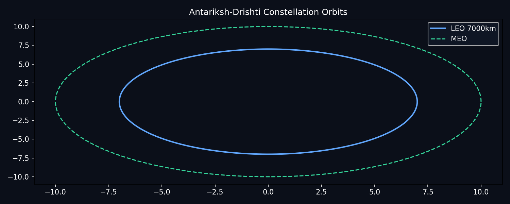

ISRO-grade · Open-source · Python 3.11+
Vision of Space,
built in the open.
End-to-end observatory simulator — orbit design, JWST-like scheduling, synthetic imaging, photometry and exoplanet detection. Every plot below is generated from src/.
- Period @ 7000 km
- 5828 s
- Transit depth
- 1.2%
- Tests
- 15 passed

Fig 1 — LEO + MEO constellation · src/orbit.py
🛰️ Orbit Mechanics
Kepler + J2-aware circular propagation. Try different altitudes — period updates live via src/orbit.py:period.
Period calculator
7000 km → 5828 s (97.1 min)
LEO vs MEO preview · canvas, no dependencies
Fig 1 — committed render from scripts/generate_visuals.py
Physics notes
T = 2π√(a³/μ), μ=398600.4418 km³/s². J2 correction uses (R/a)²·cos²(i). See docs/orbits.md.